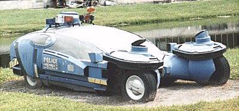

Impacto sociocultural
Se considera que Blade Runner, a través de su ambientación y su temática, marcó la introducción del género ciberpunk en la cultura popular. Si bien en un principio fue evitada por la audiencia norteamericana, vio creciendo su popularidad progresivamente, sobre todo con la aparición del VHS y el Laserdisc. Para 1989, Blade Runner era ya el Laserdisc de Criterion Collection más vendido,3 y el estreno del montaje del director en 1992 ayudó a aumentar su estatus de filme de culto y, con posterioridad, al hecho de que fuera vista como una de las películas más influyentes de su siglo. Un amplio número de autores señala que Blade Runner continúa reflejando tendencias y preocupaciones sociales actuales.
La película fue seleccionada en 1993 para su conservación en el Registro Nacional de Cine de la Biblioteca del Congreso de Estados Unidos por ser «cultural, histórica o estéticamente significativa», y es utilizada frecuentemente en conferencias universitarias
.jpg)
Es una referencia popular en numerosos medios: series televisivas como Futurama, Doctor Who, Stargate SG-1, American Dad! o Los Simpson, se han referido varias veces a Blade Runner.El actor William Sanderson, quien interpretó a Sebastian, puso la voz a un personaje similar en Batman: La serie animada.
En la película de acción El sexto día (2000), un psiquiatra virtual pide al protagonista que se imagine a dos tortugas cruzando un desierto, en referencia a la escena del test Voight-Kampff a Leon, y en Alien: Covenant (2017), el personaje de David repite la frase «That's the spirit!» de Roy Batty. La ampliación de imágenes para descubrir detalles y el término «enhance» («aumentar» o «realzar»), utilizado por Deckard en la secuencia de la máquina Esper, han sido elementos recurrentemente empleados en el ámbito tecnológico o en el mundo audiovisual, y unas tomas similares al primer plano de un ojo humano en la primera escena de Blade Runner se pueden apreciar en películas como Días extraños,11 Soldier, Alien: Covenant o Blade Runner 2049.
Elementos de la pelicula
Sedán de Deckard en el American Police Hall of Fame & Museum de Titusville (Florida). Es uno de los dos vehículos usados en el filme de los que hay constancia de su conservación.
Uno de los Spinner, coches voladores de la película diseñados por Mead, en Disney-MGM Studios antes de ser desmontado en 1999.